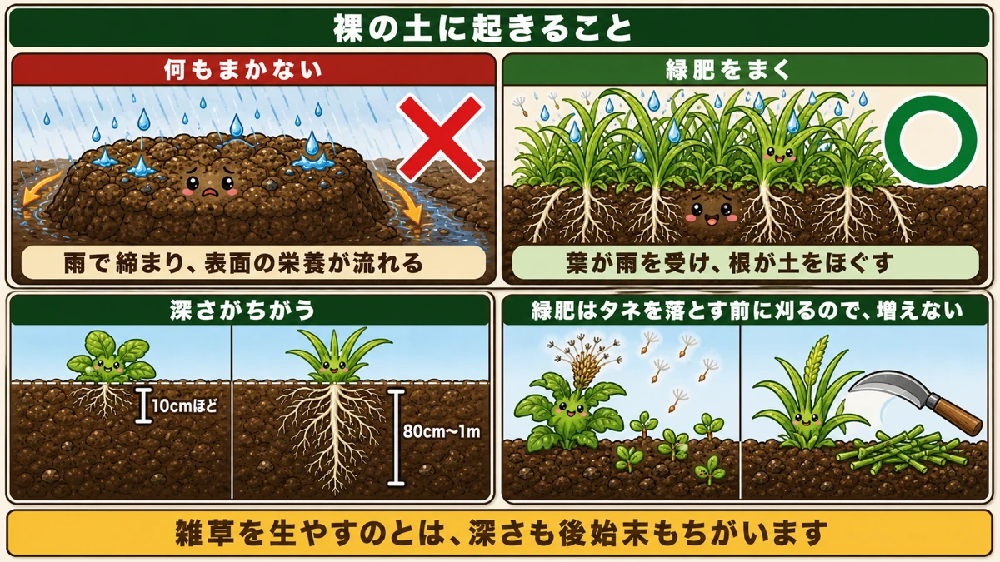
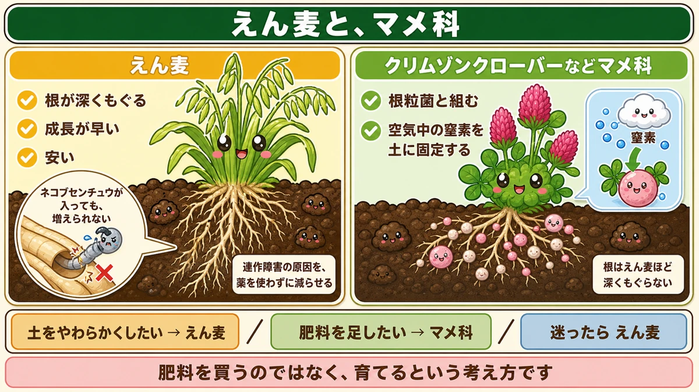
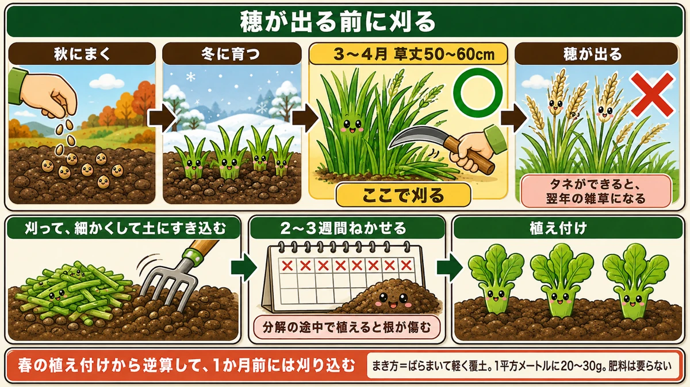

Grow your fertiliser instead of buying it 🌾 And the roots matter more than the nitrogen

🌾 "My beds sit empty all winter."
🌾 "I've grown the same thing in the same place and it's getting worse each year."
🌾 "How is green manure different from just letting weeds grow?"
Hello, I'm Eiko. Eight years of growing vegetables organically and without pesticides, and a teaching licence in science.
The headline:
Green manure is a way of growing your fertiliser rather than buying it.
And the main benefit isn't the fertiliser at all. It's that the roots cultivate the soil for you.
Leave it bare and it sets hard

What this diagram says （図解の文字）
- What happens to bare soil
- ✗ sow nothing — "rain packs it down and the surface nutrients wash away"
- ○ sow green manure — "the leaves take the rain and the roots loosen the soil"
- The depth is different: weeds "about 10 cm" ／ green manure "80 cm to 1 m"
- "Green manure is cut before it seeds, so it doesn't spread"
Bare soil is compacted by rain
Leave a bed empty over winter and rain hits the soil directly and shatters the crumb structure. The fine particles fill the gaps and the surface sets hard.
Then run-off carries the surface nutrients away — and the top few centimetres, the most valuable part of any plot, gets poorer.
"Wouldn't weeds do the same?"
Half right. Two differences:
Depth. Most weeds are shallow-rooted and only work the surface. Green manure can put roots down nearly a metre depending on the variety.
Seed. Weeds left alone drop seed and come back in the same place next year. Green manure is turned in before it seeds, so it doesn't multiply.
What to sow

What this diagram says （図解の文字）
- Oats, and legumes
- Oats — ✓ "roots go deep" ✓ "fast growing" ✓ "cheap"
- "Root-knot nematodes get in, but can't multiply" — "reduces a cause of replant problems without a chemical"
- Crimson clover and other legumes — ✓ "partner with nodule bacteria" ✓ "fix nitrogen from the air into the soil"
If in doubt, oats
The easiest thing to handle in a home garden:
- Fast. Green in about two weeks
- Deep-rooted. Breaks up the compacted layer
- Cheap. A kilo costs very little
And the most important part: some oat varieties reduce root-knot nematodes.
How oats reduce nematodes
Nematodes are small organisms that make knots on roots and weaken the plant — one of the big causes of replant problems.
Oat roots have a useful property: a nematode can enter, but it can't develop there. It goes in, lays, and the line stops — a dead end.
So a single season of oats measurably reduces the nematode population, and it's one of the very few ways to do that without a chemical.
Clover also makes nitrogen
The other option is a legume such as crimson clover. Legumes work with nodule bacteria, so they fix nitrogen from the air into the soil — they make the fertiliser itself.
But they don't root as deeply as oats. A simple way to choose: oats to loosen the soil, legumes to feed it.
How I choose
- After summer crops, where the soil is hard — oats
- A bed that's been worked for years and is getting poor — clover
- A bed just standing empty until spring — oats, because they're quick
If you can't decide, sow oats. They go wrong least often.
Sowing, and when to turn it in

What this diagram says （図解の文字）
- Cut it before it heads
- "Sow in autumn" → "grows through winter" → "50–60 cm tall" ○ "cut here"
- ✗ "heads form" — "once it seeds, it's next year's weed"
- "Cut it, chop it small, dig it in" → "leave it 2–3 weeks"
- ✗ "planting while it's still breaking down damages roots"
Sowing: just broadcast it
Loosen the bed, scatter the seed and rake a little soil over it. That's all.
About 20–30 g per square metre (roughly ¾–1 oz per square yard). Slightly more than feels right is fine.
No fertiliser. Feeding a green manure defeats the purpose.
Turn it in before it heads
The critical point. Let it head and set seed and your green manure becomes a weed — next year there are oats all over the plot that you don't remember sowing.
So cut it before the heads appear and dig it in.
There's a second reason: young growth is soft and breaks down quickly. Dig in tough, mature material and decomposition takes a long time — and nitrogen runs short while it happens.
The timing in practice
Autumn-sown oats: cut when the plants are 50–60 cm (20–24 in) tall, which where I am is early spring.
Cut, dig in, and leave it two to three weeks before planting. Planting into material that's still breaking down damages the roots.
Work back from your planting date and cut a month before. That's enough.
Science bit: how do roots cultivate soil? 🔬
"Roots loosen the soil" is easy to say and hard to picture. Two things are actually happening.
① They push it apart
A root extends from the tip, forcing its way between soil particles. With tens of thousands of fine roots going in, the whole volume ends up threaded with small passages.
② And then they die
A root that has finished its job decomposes and disappears — but the channel where it was stays behind.
Those channels become the routes for water and air. If roots went down 50 cm, air now reaches 50 cm. You've cultivated far deeper than any spade could.
To sum up
- ✅ Bare beds compact in the rain and lose their surface nutrients
- ✅ The difference from weeds: root depth, and not dropping seed
- ✅ If in doubt, oats — fast, deep-rooted, cheap
- ✅ Oats reduce root-knot nematodes, because the nematodes can't multiply in them
- ✅ For nitrogen, use a legume such as crimson clover
- ✅ Broadcast and rake in. No fertiliser
- ✅ Cut before it heads — seed makes it a weed
- ✅ Leave it two to three weeks after digging in before planting
- ✅ The channels left by dead roots carry water and air
You don't have to do all of it. Pick one empty bed and sow oats in it. When you dig it in spring, the difference in the soil is unmistakable 🌾
Thank you for reading!